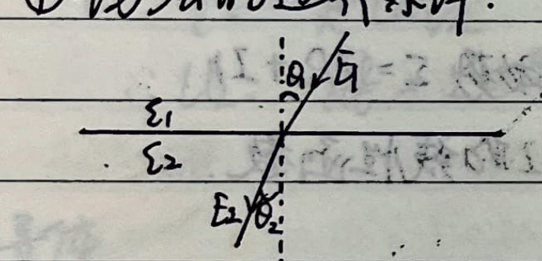
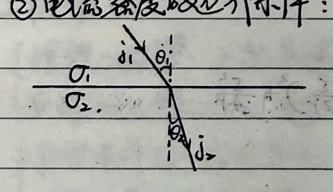
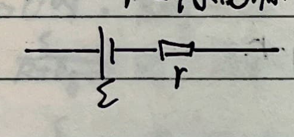
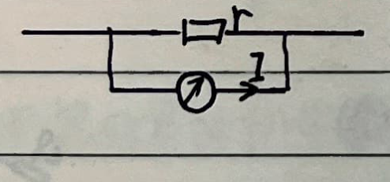
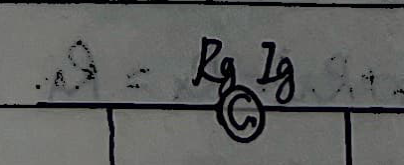

Part 10: Steady Current
1. Current Continuity Equation
Equation:
$$ \oint \vec{j} \cdot d\vec{S} = -\frac{dq}{dt} $$Steady condition:
$$ \oint \vec{j} \cdot d\vec{S} = -\frac{dq}{dt} = 0 $$2. Ohm's Law
$$ U = I R $$Since $\Delta I = j \Delta S, \Delta U = R \Delta I, \Delta U = E \Delta l, R = \rho \frac{\Delta l}{\Delta S}$:
$$ \therefore j = \frac{\Delta I}{\Delta S} = \frac{\Delta U / R}{\Delta S} = \frac{E \Delta l / (\rho \frac{\Delta l}{\Delta S})}{\Delta S} = \frac{E}{\rho} = \sigma E $$Written in vector form: $\vec{j} = \sigma \vec{E}$
Substituting into Gauss's Law: $\frac{1}{\sigma} \oint \vec{j} \cdot d\vec{S} = \frac{q}{\varepsilon}$
$$ \therefore -\frac{dq}{dt} = \frac{\sigma}{\varepsilon} q \implies q = q_0 e^{-\frac{\sigma}{\varepsilon}t} $$This represents the process of establishing a steady current in a circuit.
3. Ohm's Law for Full Circuit and Joule's Law
① For a pure resistance circuit (all electrical energy is converted to heat):
Electromotive force of the power source: $\mathcal{E} = I R + I r$
Where the terminal voltage $U = I R = \mathcal{E} - I r = -r \cdot I + \mathcal{E}$ is a linear function of $I$.
- Total power of the source: $P_{\text{total}} = \mathcal{E} I = I^2 R + I^2 r$
- Internal power: $P_{\text{in}} = I^2 r$
- Output power: $P_{\text{out}} = I^2 R$
<1> $P_{\text{out}} = I^2 R = (\mathcal{E} - I r) I = -r I^2 + \mathcal{E} I = -r\left(I - \frac{\mathcal{E}}{2r}\right)^2 + \frac{\mathcal{E}^2}{4r}$
When $I = \frac{\mathcal{E}}{2r}$, $P_{\max} = \frac{\mathcal{E}^2}{4r}$.
<2> $P_{\text{out}} = I^2 R = \left(\frac{\mathcal{E}}{R+r}\right)^2 R = \frac{\mathcal{E}^2}{\frac{(R-r)^2}{R} + 4r} \le \frac{\mathcal{E}^2}{4r}$
Maximum occurs when $R = r$.
<3> $P_{\text{out}} = U I = U \frac{\mathcal{E}-U}{r} = -\frac{1}{r} U^2 + \frac{\mathcal{E}}{r} U = -\frac{1}{r}\left(U - \frac{\mathcal{E}}{2}\right)^2 + \frac{\mathcal{E}^2}{4r}$
When $U = \frac{\mathcal{E}}{2}$, $P_{\max} = \frac{\mathcal{E}^2}{4r}$.
② Microscopic explanation of current:
$$ \vec{v}_i = \vec{v}_{0i} + \frac{q\vec{E}}{m} t_i, \quad \text{and} \quad \vec{j} = n e \bar{v}_i \implies \vec{j} = n e \bar{v}_{0i} + \frac{n e^2 \vec{E}}{m} \bar{t}_i $$Because $\vec{v}_{0i}$ is the initial velocity in all directions due to the thermal motion of the electron, $n \bar{v}_{0i} = 0$.
Let the average free flight time of the electron be $\tau = \frac{\sum t_i n_i}{n}$:
$$ \therefore \vec{j} = \frac{n e^2 \tau}{m} \vec{E} \implies \sigma = \frac{n e^2 \tau}{m} $$Also, because $\vec{v}_i = \vec{v}_{0i} + \frac{e\vec{E}}{m} t_i$
$$ \therefore \frac{1}{2} m v_i^2 = \frac{e^2 E^2}{2m} t_i^2 + \frac{1}{2} m v_{0i}^2 + \frac{e t_i}{m} \vec{v}_{0i} \cdot \vec{E} $$Averaging over a large number of electrons:
$$ \frac{1}{2} m \bar{v}_i^2 = \frac{1}{2} m \bar{v}_{0i}^2 + \frac{e^2 E^2}{2m} \bar{t}_i^2 $$ $$ \therefore \Delta E_k = \frac{1}{2} m \bar{v}_i^2 - \frac{1}{2} m \bar{v}_{0i}^2 = \frac{e^2 E^2}{2m} \bar{t}_i^2 $$And because $\bar{t}_i^2 = 2 \tau^2$ (for exponential distribution of flight times):
$$ \therefore \text{Thermal power density per unit volume } p = \frac{n \Delta \overline{E_k}}{\tau} = \frac{n e^2 \tau}{m} E^2 = \sigma E^2 $$ $$ \therefore \text{Thermal power } P = p \cdot V = \sigma E^2 l S = \frac{E^2 l^2}{\rho l / S} = \frac{U^2}{R} = I^2 R $$Therefore, work done by the current:
- Total work: $W = q U = U I t$ (If it's a pure resistance circuit, $W = Q \implies U = I R$)
- Heat generated: $Q = P t = I^2 R t$ (If it's a non-pure resistance circuit, $W' = U I t - I^2 R t$)
4. Boundary Conditions
① Boundary conditions of the electric field:

② Boundary conditions of current density:

5. Solving Complex Circuits
① Kirchhoff's Current Law (KCL):
For a node: $\sum I_i = 0$ (The node can be a region; current flowing in is positive, flowing out is negative, or vice versa).
(Theoretical basis: Steady condition $\oint \vec{j} \cdot d\vec{S} = -\frac{dq}{dt} = 0$.)
② Kirchhoff's Voltage Law (KVL):
For a segment: $\sum U_i = \varphi_a - \varphi_b = \sum \mathcal{E}_i + \sum I_i R_i$
(Potential drop is positive, rise is negative, or vice versa; on resistors, current direction is the potential drop direction; on voltage sources, from positive pole to negative pole, etc.)
For a loop: $\sum U_i = 0$
(Theoretical basis: $U_{ab} = \varphi_a - \varphi_b = \int_a^b \vec{E} \cdot d\vec{l}$, and $\oint \vec{E} \cdot d\vec{l} = 0$.)
③ Thevenin's Theorem:

④ Norton's Theorem:

⑤ Superposition Principle:
The current through any branch of a circuit is equal to the algebraic sum of the currents produced in that branch by each power source acting independently (with the other power sources replaced by their internal resistances).
(Theoretical basis: $I = \vec{j} \cdot \vec{S} = \sigma \vec{E} \cdot \vec{S} = \sigma (\sum \vec{E}_i) \cdot \vec{S} = \sum (\sigma \vec{E}_i \cdot \vec{S}) = \sum I_i$.)
6. Modifying Ammeters
① Ammeter (A):
